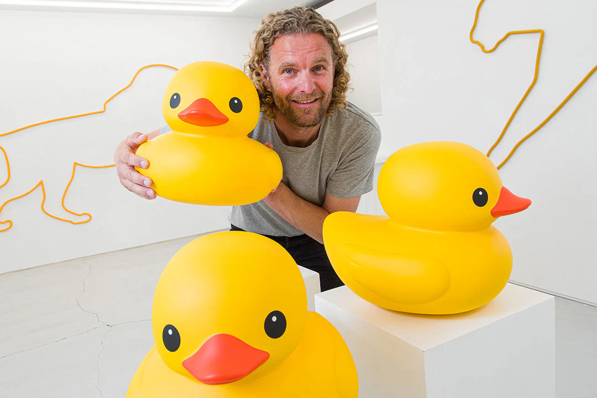

Florentijn Hofman's 'MORE Yellow' Solo Exhibition
Expositions & Collections Majeures
- 2023
- “PLAY – Upside Down” (Hong Kong)
- 2022
- “Space Dog” (Shanghai, China)
“Celebrate” Today Art Museum (Shanghai, China)
“Rubber Duck” (Seoul, Korea)
“Magic Cube” (Chengdu, China) - 2021
- “Shiny Squirrel” (Chongqing, China)
“Playground” (Stedelijk Museum, Amsterdam, The Netherlands)
“Rubber Duck” (liquique, Chile) - 2020
- “Messenger of Brisbane” (Brisbane Festival, Australia)
“Selfie Panda“(Dujiangyan, China) - 2019
- “Diversity for Peace” (The Procuratie Vecchie, Venice, Italy)
“New Humania Exhibition” (NEMO Science Museum, The Netherlands)
“Rubber Duck” (Osaka, Japan) - 2018
- “Play Around the World” (Whitestone Gallery Taipei, Taiwan)
“Play Around the World” (Whitestone Gallery Hong Kong, China) - 2017
- “Rubber Duck” (Santiago and Valparaiso, Chile)
“Bubblecoat Elephant” (Kraken, Shenzhen, CN)
“Sweet Swans” (Seoul, Korea)
“Bubblegum Frogs” (Chiayi County, TW)
“James a la Laika” (Shanghai, CN) - 2016
- “Pets” (Schiphol Amsterdam Airport, The Netherlands)
“Conibear” (Eelde, NL)
“Floating Fish” (Wuzhen, CN)
“Rubber Duck” (Osaka and Macau) - 2015
- “PROJECTS 2014 (Moonrabbit, Taoyuan, TW)
“Belgrade Bear” (Belgrade, Serbia)
“Hippopothames” (London, UK)
“Rubber Duck” (Shanghai, Nanjing, Guiyang, Qingdai, Hangzhou) - 2013
- “Zagarayuschiy Zayats” (St. Petersburg, Russia)
“2 Blue Sparrows” (Rock Werchter Fest, Werchter, Belgium)
“Rubber Duck” (Sydney, Baku, Hong Kong, Pittsburg, Beijing, Taoyuan, Kaohsiung) - 2012
- “Mosca Muerta” (Cut Out Fest, Querétaro, Mexico)
“Mickey the Pig” (Arte headquarters, Strasbourg, France)
“Little Factory” (Landmark industrial area Azeven Noord, Drachten, NL) - 2011
- “Kobe Frog” (Hyogo Museum of Art, Kobe, Japan)
“Steelman” (Amsterdam, NL)
“Lookout Rabbit” (Nijmegen, NL) - 2010
- “Fat Monkey” (Sao Paulo, Brazil)
“Solo show, 12 meter Rubber Duck” (Hasselt, BE)
“The City Museum, 2 Caniches and Mole” (Lelystad, NL)
Solo show, “Dushi” (Delfzijl, Groningen, NL) - 2009
- “Aqua Metropolis Osaka 2009”, “Rubber Duck” (Osaka, JP)
“Twente Biennale” (Hengelo, NL)
Solo show, Galery West, “Dushi”, “Two Treehouses, Tree and platonised wood” (The Hague, NL) - 2008
- “Mostra sesc de artes 08, Rubber Duck” (Sao Paulo, BR)
- 2007
- “See for real, Zirkus Zeppelin” (South-Holland, NL)
“Instant Urbanism” (Basel, Switzerland)
“Estuary Biennale” (St. Naizare, FR) - 2006
- “Urban Explorers Festival” (Dordrecht, NL)
“Boumbaclaque, Dak’art Off biennale, Lion avec ballon” (Dakar, Senegal) - 2005
- “Krabbeplas, The Great Conservancy Show, happening” (Vlaardingen, NL)
Solo show (Galery West, The Haque)
“Nationaal Monument” (Amsterdam) - 2004
- Solo show (Museum Nagsael, Rotterdam, NL)